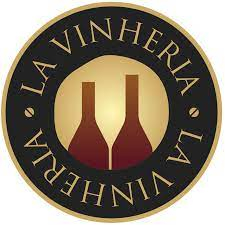

Vinheria Boa Safra
Vinhos por país
França 
 Bordeaux é um vinho famoso da região de Bordeaux, na França. É um vinho tinto encorpado, com sabor de frutas escuras e notas de carvalho. Os vinhos brancos de Bordeaux são geralmente feitos com uvas Sauvignon Blanc e Semillon e têm um sabor cítrico e mineral.
Bordeaux é um vinho famoso da região de Bordeaux, na França. É um vinho tinto encorpado, com sabor de frutas escuras e notas de carvalho. Os vinhos brancos de Bordeaux são geralmente feitos com uvas Sauvignon Blanc e Semillon e têm um sabor cítrico e mineral.
Itália 
 Chianti é um vinho tinto da região da Toscana, na Itália, feito principalmente com uvas Sangiovese. Tem um sabor terroso e frutado, com notas de cereja e violeta.
Chianti é um vinho tinto da região da Toscana, na Itália, feito principalmente com uvas Sangiovese. Tem um sabor terroso e frutado, com notas de cereja e violeta.
Espanha 
 Rioja é um vinho tinto da região de Rioja, na Espanha, feito principalmente com uvas Tempranillo. Tem um sabor frutado e picante, com notas de baunilha e carvalho.
Rioja é um vinho tinto da região de Rioja, na Espanha, feito principalmente com uvas Tempranillo. Tem um sabor frutado e picante, com notas de baunilha e carvalho.
Estados Unidos
 Cabernet Sauvignon é um vinho tinto popular nos Estados Unidos, produzido principalmente na região de Napa Valley, na Califórnia. Tem um sabor rico e encorpado, com notas de frutas escuras, cedro e tabaco.
Cabernet Sauvignon é um vinho tinto popular nos Estados Unidos, produzido principalmente na região de Napa Valley, na Califórnia. Tem um sabor rico e encorpado, com notas de frutas escuras, cedro e tabaco.